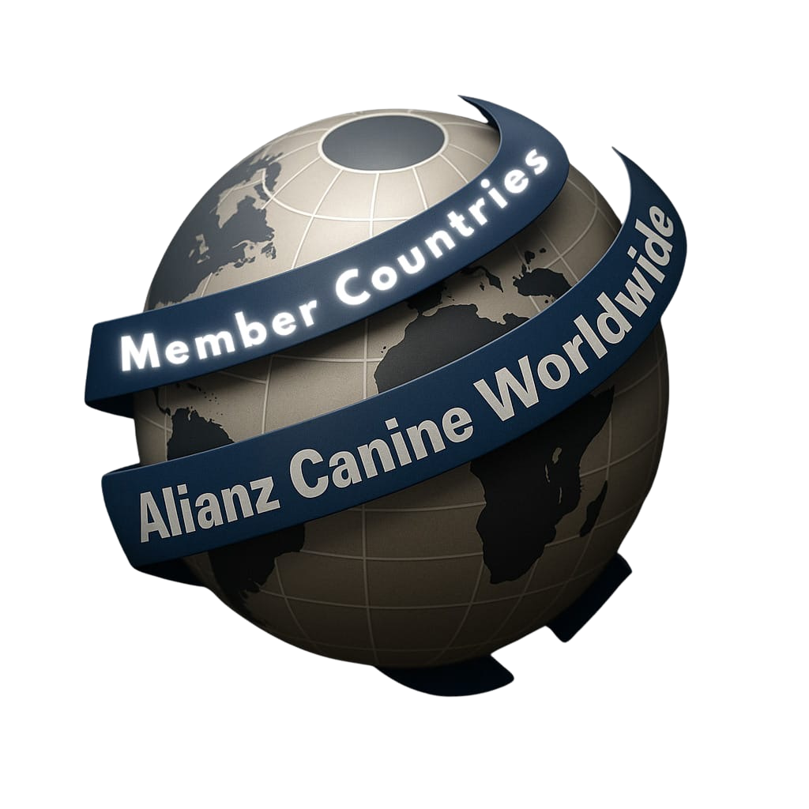

Sistema visual y de comunicación de una organización cinológica global con presencia en sesenta países y treinta y cuatro años de historia.
La paleta está construida sobre el contraste entre dos protagonistas — navy profundo y crema pergamino — con el oro heritage como único acento de marca. Los dos secundarios son apoyos estructurales: agregan dimensión sin competir.
Cada pieza respeta una distribución calibrada. El navy domina como ancla visual, el crema y los grises ofrecen aire y respiro, y el oro aparece quirúrgicamente para marcar lo importante.
El oro nunca compite con el oro. Cuando una pieza tiene foto dominante, el dorado se reserva exclusivamente para la firma o el acento mínimo del título.
El sistema tipográfico combina una sans humanista contemporánea para titulares, un serif editorial para citas y remates emocionales, una sans neutra para cuerpo extenso, una monoespaciada para detalle técnico, y un par dedicado para soporte multilingüe en japonés.
Toda raza. Toda nación. Un hogar.
Mi perro siempre fue extraordinario. Ahora el mundo puede verlo.
Criadores, jueces, handlers y dueños de 60 países encuentran por primera vez un hogar común que protege la salud, la diversidad y el linaje canino.
est. 1991 · 60 países · 5 continentes · acw 2026
あらゆる国。ひとつの居場所。
Seis niveles jerárquicos cubren del headline editorial al pie de página técnico. Todos los tamaños siguen la misma escala de razón áurea aproximada para mantener proporciones armónicas.
El tagline es el activo verbal más importante de la marca. Se traduce a cinco idiomas oficiales que cubren los mercados clave actuales (España, Italia, Ecuador, Brasil, Estados Unidos) y el mercado prioritario de expansión (Japón). El remate emocional — "un hogar" en cada lengua — siempre va en Source Serif italic dorado.
En web y app, el tagline se muestra en el idioma del navegador o dispositivo del usuario. El selector manual de idioma siempre está disponible en el header. La versión inglesa funciona como fallback universal.
Cada pieza impresa o publicitaria utiliza el idioma del país donde se distribuye. En eventos internacionales (campeonatos, shows globales), se usa la versión en cinco lenguas como statement de apertura.
Las traducciones a italiano y japonés requieren revisión final con copywriter nativo antes de publicación oficial. La versión actual es funcional para mockups y aprobación interna.
La fotografía es el lenguaje principal de la marca. El sistema visual queda en segundo plano para que el animal y el momento humano lleven el peso. Tres principios estructuran toda decisión de imagen.
Buscamos el momento real: el criador en su casa, el juez evaluando, la niña con su perro en el parque. Nunca poses de estudio con fondo blanco infinito ni modelos profesionales contratados.
Luz de ventana, luz de tarde, luz de show indoor real. Evitamos flash directo, luz de estudio cenital y tratamientos de color saturados. La piel y el pelaje del perro deben verse como son.
La mejor foto no es la del perro solo: es la del perro con su gente. Manos, miradas, gestos pequeños. La cámara está cerca, no a distancia institucional.
Distintos países, distintas razas, distintos perfiles de criadores. Razas nativas marginadas tienen la misma presencia que las populares. Una foto editorial nunca debería poder confundirse con una de la competencia.
Toda foto pasa por uno de estos tres tratamientos en post-producción. Mantiene coherencia visual sin importar de dónde venga la imagen original.
Natural para historias reales y contenido de comunidad en redes.
Cálido para piezas heritage, certificados y comunicación institucional.
Dramático para campañas hero, video manifiesto y portadas de eventos.
Ninguna foto de stock con perros felices sobre fondo blanco. Ningún tratamiento blanco y negro extremo. Ningún filtro Instagram-preset. Ningún color saturado tropical. Nunca un perro solo posando como producto.
Cuando una decisión visual no esté cubierta en los capítulos anteriores, estas diez reglas funcionan como criterio final. El sistema evoluciona, pero estos diez principios son no negociables.
Si una pieza no se siente a la altura de una organización de 34 años con presencia en 60 países, no sale. Si Alianz no la pudiera firmar con orgullo, no sale. La autoridad no se prueba: se ejerce con consistencia.
El globo con la cinta es la marca oficial de Alianz Canine Worldwide — representa el alcance global de la organización y su carácter de estándar único, sin importar el país. Es el único logo autorizado a partir de esta versión del sistema.

El logo siempre necesita aire alrededor — nunca debe tocar el borde de una pieza ni competir con texto u otros elementos cercanos.
El logo es un activo cerrado — no se modifica bajo ninguna circunstancia.
Este documento describe el sistema visual y de comunicación de la marca. Su distribución se limita a personal autorizado y agencias colaboradoras del proyecto.
El logo institucional y sus reglas de uso están incluidos en el capítulo 07. Su propiedad y autorización de uso siguen siendo responsabilidad exclusiva de Alianz Canine Worldwide HQ.
Un feed que se lee
como una revista.
El sistema social está construido sobre tres formatos rotatorios: dato con impacto, historia real, y bloque editorial. Cualquier mes de contenido se compone alternando estos tres tipos para crear un ritmo visual claro y un feed reconocible al primer vistazo.
el vínculo
Every nation.
One home.
por un mismo estándar
Toda nación.
Un hogar.
en cuatro especialidades
Stories.
Los stories siguen la misma lógica del feed pero adaptados a vertical. Cuatro plantillas base cubren la mayoría de los casos: anuncio editorial, frase de manifiesto, fragmento de historia real, y promoción de evento.
desde Quito. ecuador · 2026
Europeo de
Grooming. milán · 14 marzo
Cinco años. quito · ecuador
Reels covers.
La portada de cada reel mantiene el mismo lenguaje visual: titular grande Inter Tight, eyebrow mono dorado, pause visual con play indicator centrado. El video puede vivir en formato documental, dato, o narrativo.
que un perro
sea oficial? 90 segundos · manifiesto
de Tika. historias reales · ecuador
Un solo
vínculo. 15 segundos · dato hero